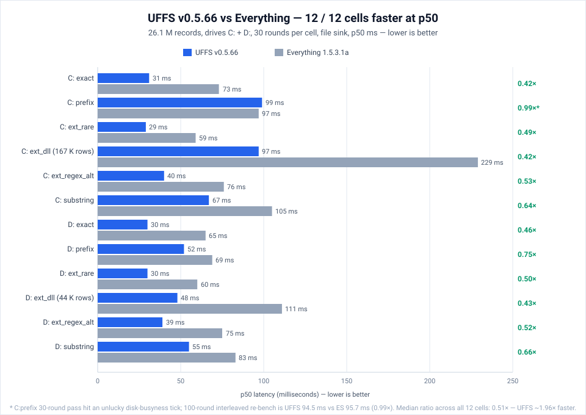
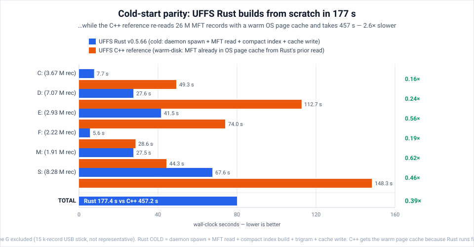
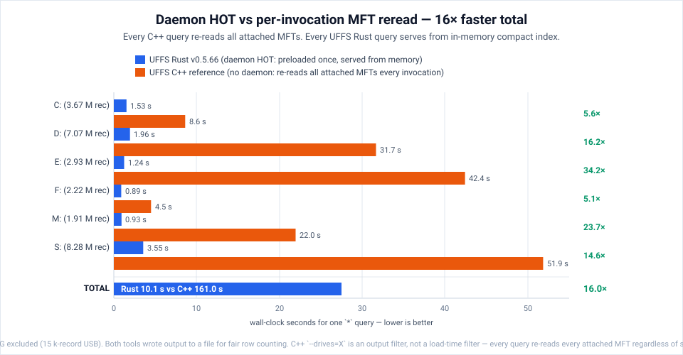
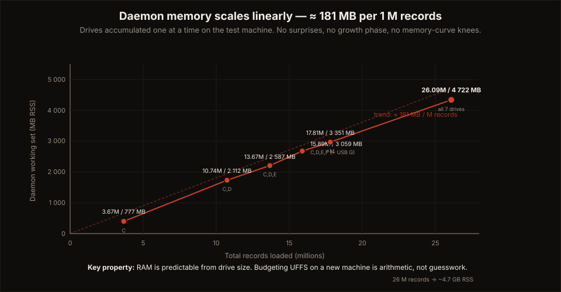
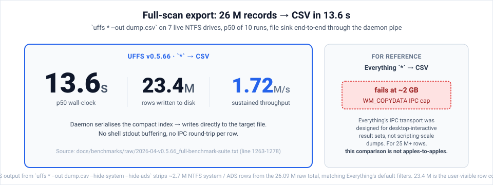

UFFS is a benchmark-driven NTFS search engine for Windows, built in Rust. It reads the Master File Table directly, builds a compact persisted index, and keeps large NTFS estates searchable through a warm daemon — with one engine behind CLI, TUI, API, and MCP.
Every number is version-stamped and backed by a raw log. Full methodology, per-drive tables, and the two workloads UFFS is currently slower on are published in the benchmark hub.
Windows search is often too slow, too fuzzy, or too opaque for power users, developers, and large NTFS estates. UFFS is built for exact filename, path, and metadata search at scales where directory walking and shell search become the bottleneck.
Reads the NTFS Master File Table directly instead of crawling the filesystem tree.
Builds once, serializes a compact index, and restarts warm from cache in seconds.
A background daemon keeps the index hot so targeted queries answer in single-digit milliseconds.
Measured on a real 7-drive, 26M-record Windows 11 system (AMD Ryzen 9 3900XT, 64 GB RAM). Cold build, warm restart, and hot query are three different workloads — we measure and publish them separately instead of averaging them into one "startup time" number.





Bulk path: full-scan export of 26M records to CSV in 13.6 s (1.72M records/sec through the full pipeline; 323k rows/sec sustained).
* top-100 and --sort path) where the
current build is slower than its own v0.5.4 baseline, with root causes and tracking. Publishing the
regressions is part of the product.
Raw MFT read, parse, build the compact index, write the cache. The source of truth.
Daemon restarts from the serialized cache in seconds — no re-read of the drive required.
The index is resident in the daemon; targeted queries answer from memory in 0–3 ms.
The same Rust core powers every surface — so humans, scripts, and AI agents all query one engine:
Windows one-command install via WinGet:
# Windows Package Manager winget install SkyLLC.UFFS
Or download pre-built binaries directly — each release ships a CHECKSUMS.txt (SHA256),
per-crate SBOMs (CycloneDX), and SLSA build-provenance attestations. No build toolchain needed.
CLI + daemon + MCP + MFT tools. Full live-NTFS support. Recommended.
Offline MFT analysis. Includes the UFFS.app bundle.
Offline MFT analysis. Includes install.sh.
The UFFS platform — engine, daemon, CLI, and MCP server — is MPL-2.0 and will never be made less open. No telemetry, no accounts, no outbound network calls — UFFS runs entirely on your machine. If it saves you time, sponsorship funds a custom domain, code signing, and continued benchmark work.